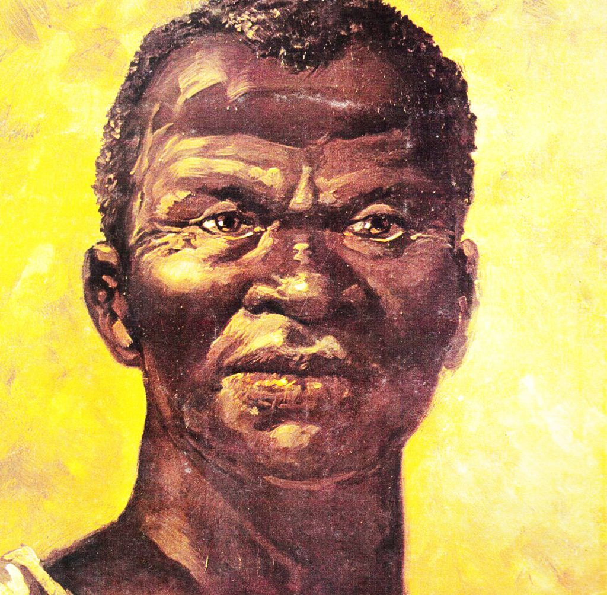
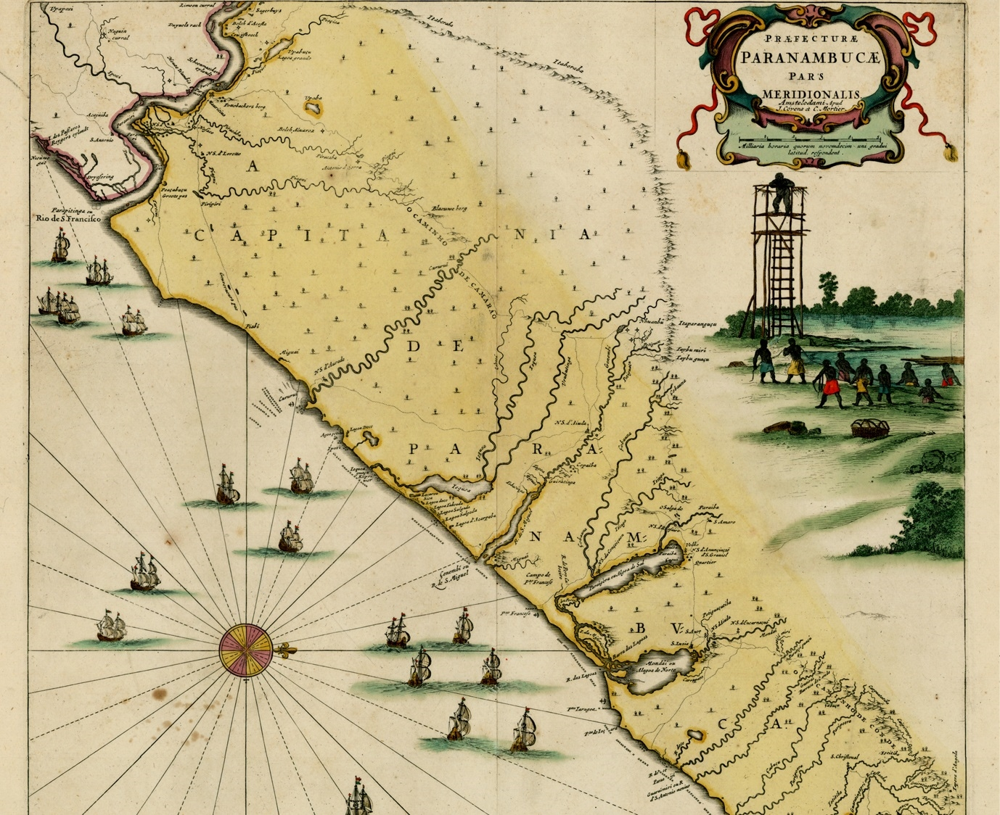

Introdução
O Dia da Consciência Negra é celebrado em 20 de novembro no Brasil. Essa data marca a morte de Zumbi dos Palmares, líder do maior quilombo do período colonial, simbolizando a resistência negra contra a escravidão. É um momento para refletir sobre a história, a cultura e as lutas da população negra brasileira.
História do Dia
A data foi instituída oficialmente pela Lei nº 12.519/2011, mas já era comemorada desde os anos 1970 pelo Movimento Negro Unificado (MNU). O 20 de novembro foi escolhido em homenagem a Zumbi, morto em 1695. Antes disso, o dia 13 de maio (abolição da escravatura) era visto como uma data imposta, sem foco na luta negra.
- 1971: Grupo Palmares, em Porto Alegre, propõe a data.
- 1978: MNU oficializa a comemoração.
- 2011: Tornou-se feriado nacional em alguns estados e municípios.
Zumbi dos Palmares
Zumbi nasceu livre em 1655 no Quilombo dos Palmares, em Alagoas. Líder guerreiro, defendeu o quilombo contra ataques portugueses por décadas. Representa a coragem e a resistência do povo negro. Sua morte não acabou com a luta: inspira até hoje movimentos por direitos iguais.
Importância para a População Negra Brasileira
Esse dia promove a conscientização sobre o racismo estrutural, valoriza a contribuição africana à cultura brasileira (samba, capoeira, culinária) e reforça a luta por políticas afirmativas, como cotas universitárias. É essencial para combater desigualdades: negros representam 56% da população, mas enfrentam maiores índices de pobreza e violência.